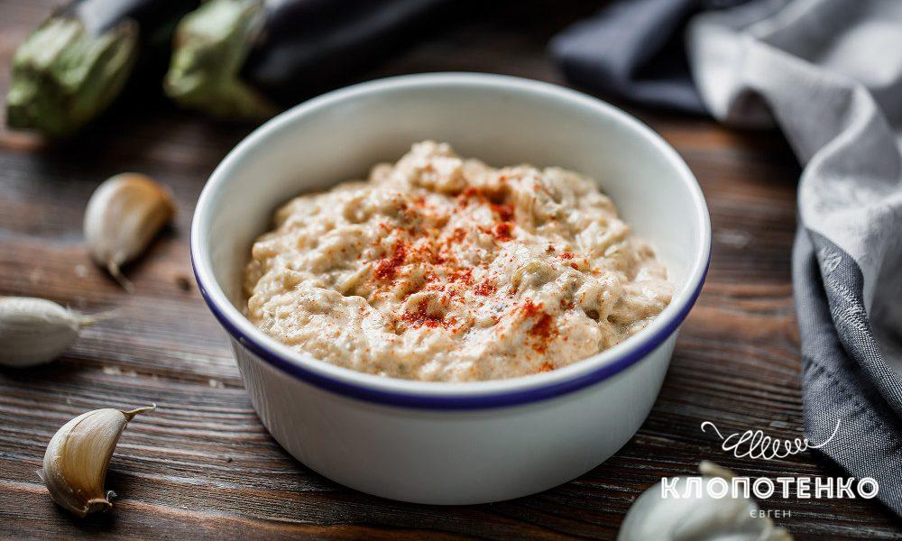
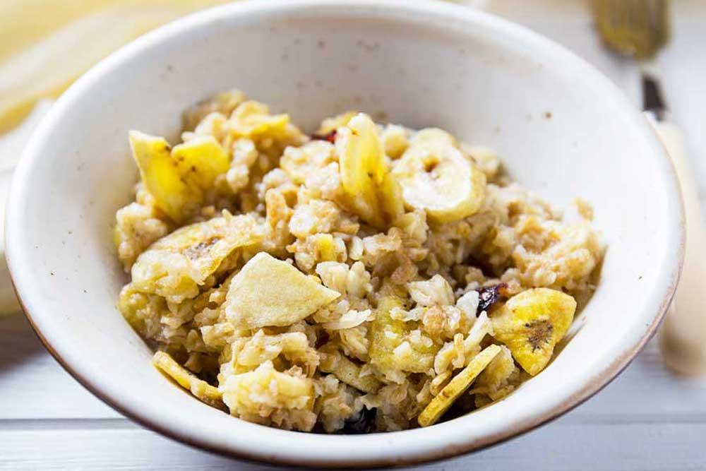
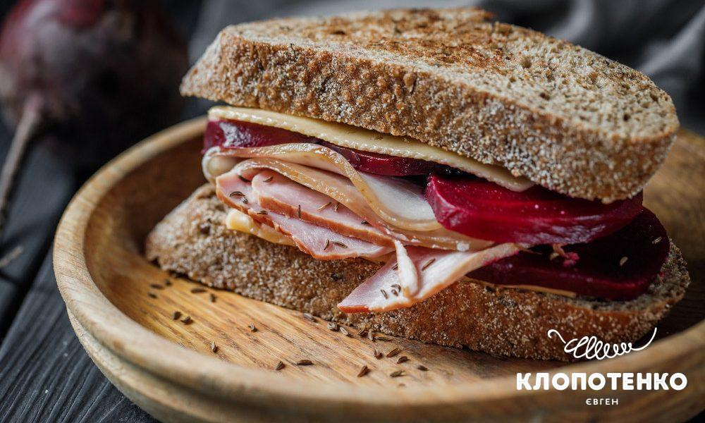
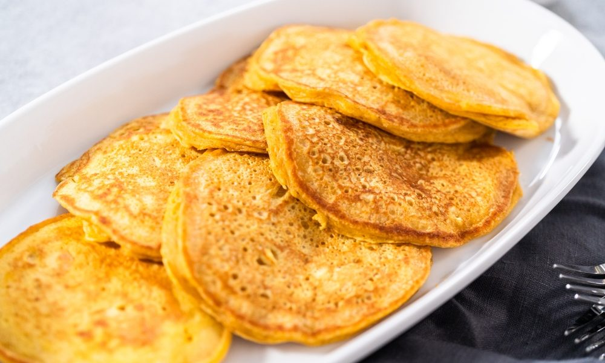
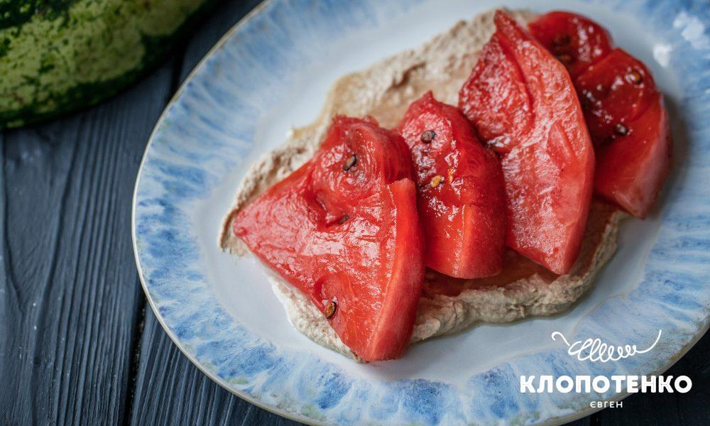
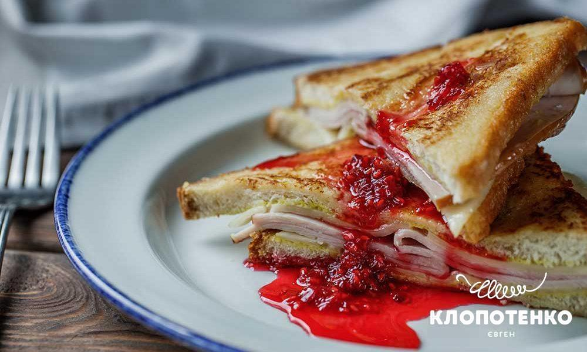
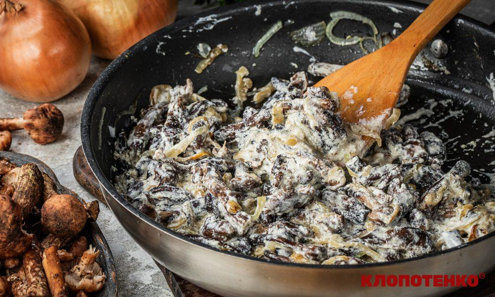

4 яблука сорту Антонівка
4 яйця
150 г цукру
160 г борошна (+1 ст. л. для «французької сорочки»)
20 г вершкового масла|мастила| 82,5%
1 ч. л. кориці

Пюре з баклажанів із йогуртом
2 баклажани
2 ст. л. густого йогурту
½ лимона (сік)
2 зубчики часнику
1 ч. л. копченої паприки
2 ст. л. оливкової олії
за смаком сіль

вівсянка з банановими чіпсами
300 мл молока (або води)
30 г вершкового масла
30 г бананових чіпсів
30 г в'ялених вишень
сіль та цукор за смаком

український сендвіч
1 середній буряк
4 шматочки житнього чи гречаного хліба
4 слайси свинячої грудинки
4 слайси сиру
1/3 ч. л. зерен кмину
1,5 ст. л. гірчиці у зернах

Солоні оладки
1 стейк томагавк
300 г гарбузового пюре
2 яйця
100-150 г борошна
1 ч. л. розпушувача
сіль до смаку
1/4 ч. л. чорного перцю

Рецепт кавуна
4 скибочки кавуна
1 банка консервованого тунця в олії (80 г)
2 яйця (варених яєчних жовтка)
4 ст. л. оливкової олії
чорний свіжомелений перець (за бажанням)

сендвіч з шинкою
4 шматочки тостового хліба
1 ст. л. американської гірчиці
4 слайси шинки
4 слайси твердого сиру Тенеро Мілк від КОМО
2 ст. л. молока
1 яйце

маффін
120 г розм'якшеного вершкового масла
1 ст. л. цукру
3 яйця
50 г свіжого шпинату
120 г пшеничного борошна
10 г розпушувача